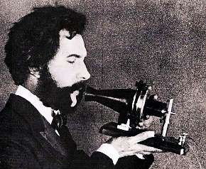

Борис Акунин
Мой календарь
Существует такая вещь как «телефонная карма». Звонки, как известно, бывают удачные и неудачные. Можно позвонить не ко времени, а иногда случаются дни, когда никуда не получается дозвониться. Или звонишь - и слышишь не то, что хочешь услышать.
Если вам нужно провести какой-то ответственный разговор или выяснить нечто очень важное, сегодня лучше сделать это не очно, а по телефону.
10 марта - благоприятнейший день для «дистанционных бесед по проводу с использованием конвертации акустических вибраций в электрические сигналы» (так объяснен принцип телефонной связи в одном из ранних описаний).
В этот мартовский день 1876 года двадцатидевятилетний Александр Белл впервые дозвонился. Звонил он своему помощнику Томасу Уотсону, который находился в соседней комнате. Тот был так потрясен, что прибежал к шефу и сказал: «Я слышал каждое слово!», поэтому разговор получился только наполовину телефонным.
Александр Белл (1847–1922) был человек, на всю жизнь завороженный тайной устной речи. В детстве он служил суфлером в театре, потом стал учителем красноречия, потом сурдопреподавателем. Женился на глухой женщине, которая пользовалась слуховой трубкой. Беллу хотелось, чтобы все друг друга услышали, несмотря на расстояния и любые преграды. Благородное устремление.
Удачи в телефонных переговорах! Пусть вам сообщат то, что вас порадует.